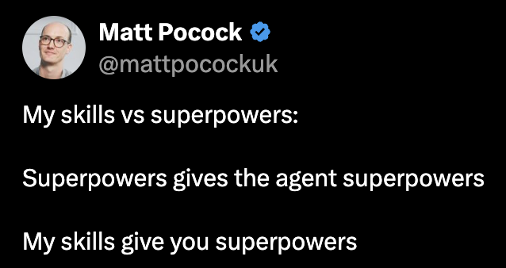
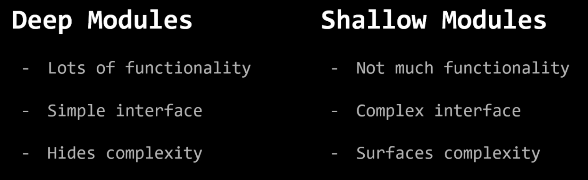

Frontend Sharing · 2026 Q4
How Matt Pocock Thinks
Zihao Lin
Intro
Matt Pocock
Total TypeScript
TypeScript courses
AI Hero
AI engineering courses, e.g. “Claude Code for Real Engineers”. Newsletter: ~60k devs
Open source
ts-reset · sandcastle · evalite
mattpocock/skills
His own .agents directory, public since Feb 2026
295.4k GitHub stars · Oct 2026
Disclaimer
Not a skill tutorial. An introduction to how he thinks.
- Not necessarily better than other approaches. It keeps you in control of every step, instead of locked into a framework.
- Rearrange the steps freely and build your own workflow.
- Focus: how he condenses engineering fundamentals into repeatable practices.
Quick recap
Same goal, opposite trigger.
Fixed pipeline. The agent decides when each step fires. The plan spells out exact files, signatures and tests.
“even a 1% chance … ABSOLUTELY MUST invoke”
Main workflow
Small change
Small composable pieces. You pick the path.
Quick recap
Other skills
Main philosophy
Approaches like GSD, BMAD, and Spec-Kit try to help by owning the process. But while doing so, they take away your control and make bugs in the process hard to resolve. These skills are designed to be small, easy to adapt, and composable.— mattpocock/skills README

Main philosophy · Why control
No clear winner yet. Own your stack.
When there's no clear winner, when there's no kind of like one true way and when things are changing all the time, you need to own as much of your planning stack as you possibly can.— Matt Pocock, Workshop, Apr 2026
No observability over the whole thing. When it breaks: “this isn't working, this sucks”, then switch tools.
“If you have control over the whole thing, then at least you know how to fix it.”
Main philosophy · Why control
Control is not doing every step yourself.
I know my skills, I know my abilities. I don't want to delegate my thinking to the model.— Matt Pocock, with David Ondrej, Jun 2026
“Planning, this alignment phase, has to be human in the loop. Has to be.”
“Implementation … can be turned into an AFK task.”
Main philosophy
Three pillars run through every skill.
Fundamentals matter more than ever
“Code is not cheap. Bad code is the most expensive it's ever been.” He translates decades-old practice for agents.
Code is the agent's environment
Agents copy what they find. Bad code breeds more bad code; AI speeds up entropy.
“I believe in inversion of control and you should be in control of the stack.”
You decide what to build, when each step runs, which irreversible changes go in. Implementation can still run AFK.
Three angles to unpack them: Dev · Code Review · Write Skill
01
Dev
Four failure modes, four old books.
Dev · Failure mode 1 / 4
“AI didn't do what I want.”
No-one knows exactly what they want.— David Thomas & Andrew Hunt, The Pragmatic Programmer
Fix · grilling
The agent interviews you until you share an understanding. Facts: it looks them up. Decisions: it asks you.
Dev · Failure mode 1 / 4
No plan mode. No long plan.
Plan mode is extremely eager to create an asset.— Matt Pocock
The agent sees the finish line, so the questions stay shallow.
- Spec: the features, from the user's view.
- Tickets: each fits one session's context.
- Models keep getting smarter: where and how to change the code, the AI decides.
Dev · Failure mode 2 / 4
“AI is too verbose.”
With a ubiquitous language, conversations among developers and expressions of the code are all derived from the same domain model.— Eric Evans, Domain-Driven Design
Fix · GLOSSARY.md
A shared language between you and the agent.
Dev · Failure mode 3 / 4
“Code doesn't work.”
Always take small, deliberate steps. The rate of feedback is your speed limit. Never take on a task that's too big.— David Thomas & Andrew Hunt, The Pragmatic Programmer
Fix · TDD
Red → green → refactor, one small step at a time.
Dev · Failure mode 4 / 4
“We built a ball of mud.”
Because agents can radically speed up coding, they also accelerate software entropy. Codebases get more complex at an unprecedented rate. — MATTPOCOCK/SKILLS README
Invest in the design of the system every day.— Kent Beck, Extreme Programming Explained
The best modules are deep. They allow a lot of functionality to be accessed through a simple interface.— John Ousterhout, A Philosophy of Software Design

Dev · Failure mode 4 / 4
Deep module, frontend edition.
Shallow · every component wires it again
const [user, setUser] = useState<User>()
const [loading, setLoading] = useState(false)
useEffect(() => {
setLoading(true)
fetchUser(id).then(setUser).finally(() => setLoading(false))
}, [id])
// + cache, retry, abort … at every call site
Deep · one small interface
const { user, isLoading, error } = useUser(id)
// fetch, cache, retry, abort: hidden inside
// tests target useUser only
Design the interface, delegate the implementation.— Matt Pocock
02
Code Review
A software factory needs brakes.
Code Review
Software factory
Only an accelerator? You built a garbage cannon.
- Work triggered by automation, not people: a slow-query report comes in, an agent writes the fix and opens a PR.
- More bad PRs than anyone can review.
Code is the agent's environment.— Matt Pocock, paraphrased
Brakes · 3 layers
Code Review · Layer 2 · AI review
Implement makes it work. Review makes it good.
Reads AGENTS.md: navigation pointers only. No coding standards.
Reads CODING_STANDARDS.md and refactors the change to match.
Commits, no comments.— Matt Pocock, paraphrased
Code Review · Layer 2 · AI review
Twelve code smells, the review baseline.
From Martin Fowler, Refactoring, ch.3 “Bad Smells in Code”
| Mysterious Name | Name doesn't reveal what it does → rename |
| Duplicated Code | Same logic shape twice → extract, call from both |
| Feature Envy | Uses another module's data more than its own → move it next to that data |
| Data Clumps | Same fields keep travelling together → bundle into one type |
| Primitive Obsession | A string stands in for a domain concept → give it a type |
| Repeated Switches | Same switch on the same type recurs → polymorphism or one map |
| Shotgun Surgery | One change, edits across many files → gather into one module |
| Divergent Change | One module, many unrelated reasons to change → split |
| Speculative Generality | Abstraction for needs the spec doesn't have → delete, inline |
| Message Chains | a.b().c().d() → hide the walk behind one method |
| Middle Man | Mostly delegates → cut it, call the target |
| Refused Bequest | Subclass ignores what it inherits → composition |
Smell names are leading words: one name recalls the whole pattern.
Code Review · Layer 3 · Human review
Spend your review on one-way doors.
Two-way door
Easy to revert. Skim it.
One-way door
Deletes data, emails 60,000 people, costly migration. Read it hard.
Blast radius
How far a mistake spreads: users, data, systems.
Code Review · Layer 3 · Human review
Same comment in two PRs? The bug is in the system.
/retro reads agent sessions- Mechanical mistake → lint / CI check. A check always runs; a rule may be ignored.
- Judgement call →
CODING_STANDARDS.md, for the reviewer - AGENTS.md → navigation pointers only
Review the system that creates the code, not just the code.— Matt Pocock, paraphrased
03
Write Skill
Skill hell, and a rubric to get out.
Write Skill · Skill hell
Free skills everywhere. Which ones are good?
There's no shared rubric, no framework for looking at a skill and making it better.— Matt Pocock
Same method for CLAUDE.md / AGENTS.md. His skill is now called writing-for-agents.
Write Skill · Trigger
Who pulls the trigger is a trade-off.
Use when an agent or another skill must reach it: reusable discipline.
No context load. The “will it fire?” question disappears: “removing a class of problem from even being a problem.” Orchestration.
Scripts can fire user-invoked skills too: claude -p "/implement <ticket>" in a loop. Matt recommends this deterministic loop for running tickets AFK.
Write Skill · Structure
Steps and reference. Split by branch, not by length.
- Two content types: steps (ordered actions) and reference (definitions, rules, templates).
- Three tiers: step in
SKILL.md→ reference inSKILL.md→ reference in its own file. - Push out by branch: what every run needs stays in; what only some branches need goes behind a pointer.
- Pointer wording decides whether the agent reads the file.
SKILL.md
GLOSSARY-FORMAT.md
ADR-FORMAT.md
/to-spec has one path, so its template stays inline.Write Skill · Steering
Steer with words the model already knows.
Leading words
“vertical slice” instead of a paragraph. Old terms, fewer tokens. Check the reasoning trace: if the agent repeats the word, it works.
Completion criterion
An agent that sees later steps rushes this one. Sharpen “done” first; split skills only if it still rushes.
No negation
“Don't write long comments” → “Write one-line comments.”
Write Skill · Pruning
Small, because every line changes behavior.
- No-op test (Matt: “deletion test”): delete a passage. Behavior unchanged? Cut it.
- Model-relative: settle it by running, not by debate.
- Descriptions: delete the no-ops there too.
- Sediment: shared docs only grow. Adding feels safe, deleting feels risky.
Conclusion
Key lines
- Code is the agent's environment.
- Fundamentals matter more than ever.
- Implement makes it work. Review makes it good.
- Spend your review on one-way doors.
- Review the system that creates the code, not just the code.
- Superpowers gives the agent superpowers. My skills give you superpowers.
Conclusion
AI is the tactical programmer. You are the strategic one.
Get the feature working now; complexity piles up.
Invest in the design so the system stays easy to change.
If we think about AI as … a sergeant on the ground making the code changes, you need someone above that. You need someone thinking on the strategic level. And that's you.— Matt Pocock · terms from John Ousterhout, A Philosophy of Software Design
Reflection
Where it doesn't fit us yet.
/to-specand/to-ticketsdon't fit our Scrum flow: an RD's ticket is already the output of to-tickets. Move both earlier, to ticket creation.- Hard to remember all skills: cognitive load.
- Personal experience as the eval. He built evalite, yet skips evals for his skills by choice.
- Not built for long-running work (
/implement-specis new).
References
- mattpocock/skills
- blog.aihao.tw — Matt Pocock 的 Agent Skill 設計哲學
- @mattpocockuk — My skills vs superpowers
- Software Fundamentals Matter More Than Ever
- Full Walkthrough: Workflow for AI Coding (Workshop, Apr 2026)
- Matt Pocock's Agentic Engineering Workflow, with David Ondrej (Jun 2026)
- mattpocock/skills: A complete AI Coding workflow, end-to-end
- Building Great Agent Skills: The Missing Manual
- New Skills! v1.3 brings /pr, /implement-spec, and /retro
- EP412 — Matt Pocock 怎麼 Code Review？
- EP417 — Matt Pocock Skills v1.3 解析
- 700 萬人下載的 /grill-me，Matt Pocock 到底寫了什麼？